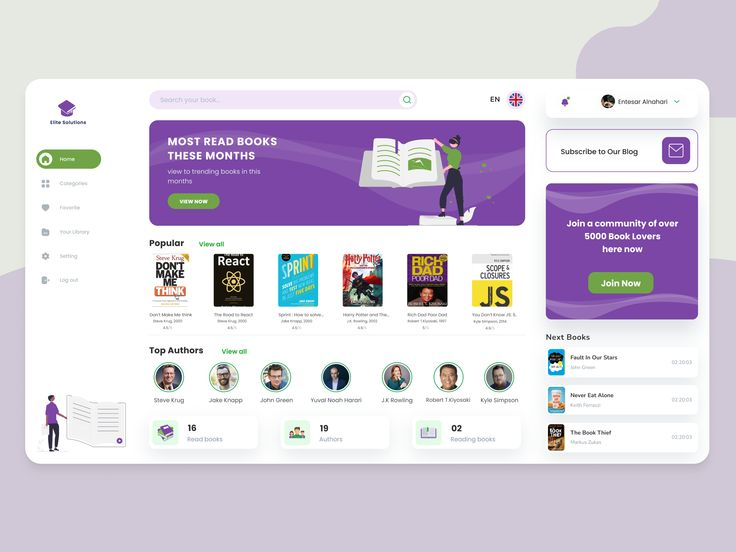

1. Sistema de Gestión Bibliotecaria (Ficticio)

Un sistema desarrollado en Python para gestionar el préstamo de libros en la biblioteca de la facultad.
- Python
- SQLite
- Tkinter (GUI)
Fecha de creación:
Ver más información del proyecto
Este proyecto fue desarrollado como trabajo final de la asignatura de Programación. Incluye un CRUD completo y reportes en PDF.
Ver repositorio en GitHub (se abre en nueva pestaña)
2. Landing Page para Evento UCLV (Ficticio)
Maquetación responsiva del sitio web oficial para el evento de innovación tecnológica de la universidad.
Fecha de creación:
Ver repositorio en GitHub
3. Script de Automatización de Backup (Ficticio)
Script en Bash diseñado para automatizar copias de seguridad en servidores Linux.
- Bash Scripting
- Linux
- Cron jobs
Fecha de creación:
Ver repositorio en GitHub